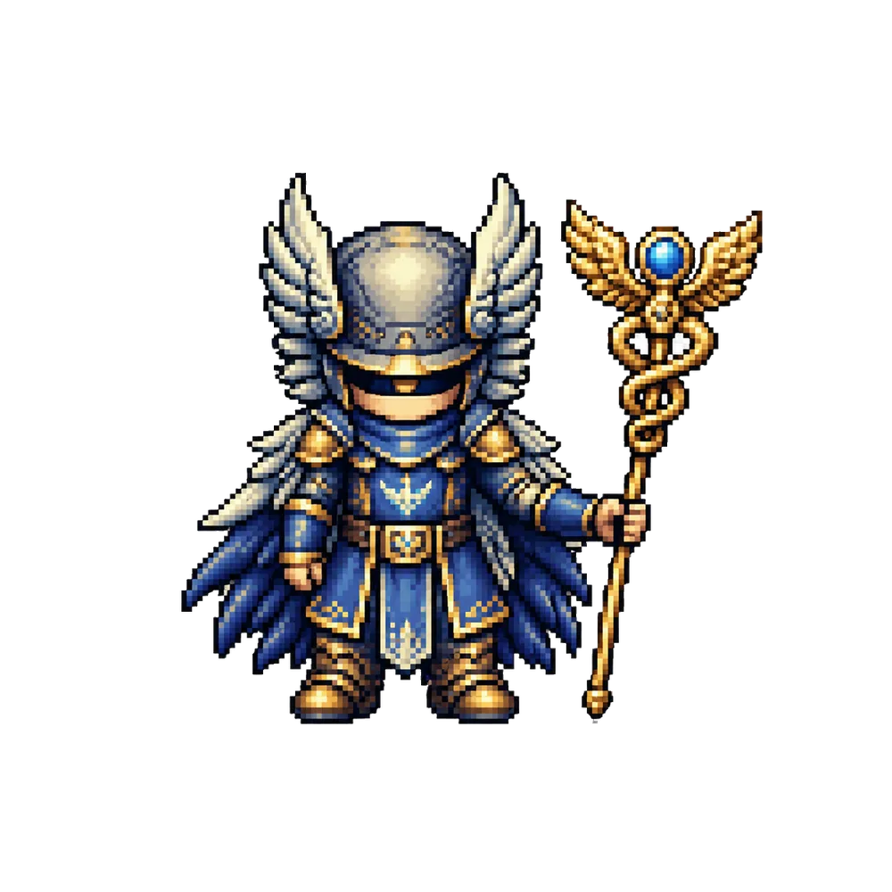

Turns one source into a complete publishing system.
Research, hooks, scripts, storyboards, production briefs, captions, and review-ready packages.
Hermes agent systems
Dedicated agents that research, create, qualify, and deliver useful work every day.

Tools wait for prompts. A Hermes employee starts with a role, approved tools, operating memory, and a definition of done.
Research, hooks, scripts, storyboards, production briefs, captions, and review-ready packages.
Choose an employee and a deliverable. The simulation shows the operating contract from memory load to human handoff.
One operator. Multiple production lines.
Hooks, narrative slides, art direction, and captions.
Concepts, scripts, shot lists, edits, titles, and clips.
Angles, variants, briefs, and learning loops.
Accounts, signals, qualification, and useful handoffs.
Every system starts with the work, the risk, and the handoff. The agent comes after the operating contract.
Inputs, tools, boundaries, approval points, and observable outcomes.
Research layer
With Firecrawl, your employee can inspect public competitor pages, structure the evidence, and turn patterns into original opportunities.
Hermes Agent provides persistent memory, reusable skills, scheduling, messaging integrations, and a real tool layer. We shape that foundation into a focused operating role.
Bring one workflow. Leave with a practical agent plan.
Book a call